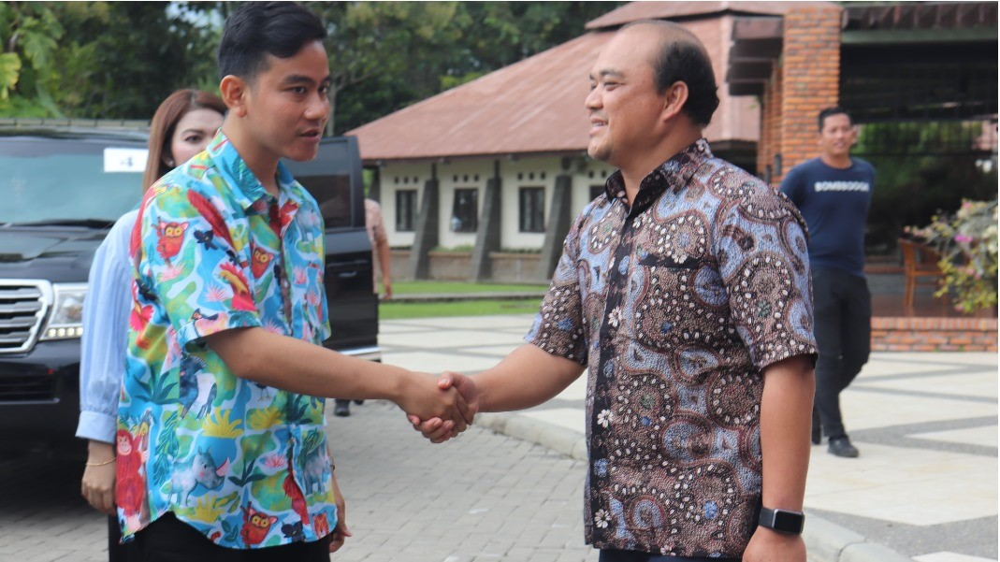
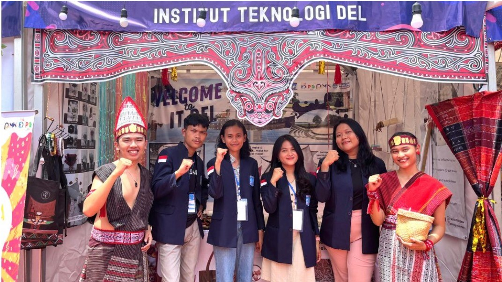

Berita Terkini

Pada hari Jumat, 24 November 2023 Institut Teknologi Del menerima kunjungan dari Ibu Kristy Mordhorts (Konsulat Amerika Serikat di Medan). Kunjungan ini disambut baik oleh IT Del yang diwakili oleh Bapak Dr. Johannes Harungguan Sianipar, S.T., M.T. (Wakil Rektor I Bidang Akademik dan Kemahasiswaan). “Kami sangat senang atas kehadiran Ibu disini untuk sharing kepada mahasiswa kami, dengan partisipasi mahasiswa juga kami berharap kegiatan ini berjalan dengan baik”. Ujar Beliau.
27 November 2023

Pada Hari Sabtu, 18 November 2023 Institut Teknologi Del menerima kunjungan Bapak Gibran Rakabuming Raka, sekaligus menjadi pembicara pada Kuliah Umum dengan topik “Pemimpin Milenial” kepada Mahasiswa/i Institut Teknologi Del.Kunjungan ini disambut baik oleh Bapak Dr. Arnaldo Marulitua Sinaga, ST., M.InfoTech. (Rektor IT Del), Bapak dan Ibu Wakil Rektor dan Dosen IT Del dan mahasiswa/i IT Del juga siswa SMA Unggul Del. Dalam kunjungan ini turut hadir Ibu Selvi Ananda, dan Bapak Bobby Nasution (Wali Kota Medan).
22 November 2023
Kegiatan

Pada Kamis, 23 November 2023, Divisi Pembelajaran Diluar Kampus – UPT PP ESTEM melaksanakan sosialisasi MBKM (Merdeka Belajar Kampus Merdeka) untuk mahasiswa-mahasiswi IT Del. Sosialisasi dihadiri oleh Monalisa Pasaribu selaku Ketua UPT PP ESTEM,

Pada tanggal 15-17 November 2023, Institut Teknologi Del turut serta mengikuti kegiatan kompetisi KMI EXPO XIV 2023 yang diselenggarakan oleh Belmawa di Universitas Pendidikan Ganesha, Singaraja Bali.

Pada hari Senin, 6 November 2023 telah dilakukan Penandatangan Perjanjian Kerja Sama (PKS) antara Fakultas Informatika dan Teknik Elektro (FITE) Institut Teknologi Del dan Institut Agama Kristen Negeri (IAKN) Tarutung tentang Kerja Sama Tridharma Perguruan Tinggi.
SPMB IT DEL

Penerimaan Mahasiswa Baru
Ujian Saring Masuk (USM) adalah salah satu jalur penerimaan mahasiswa baru yang diselenggarakan oleh Institut Teknologi Del (IT Del), melalui tes akademik dan psikotes. Pendaftaran sebagai peserta Seleksi Program USM IT Del dilakukan secara daring dan luring dengan membuka laman http://spmbapp.del.ac.id.
A. Persyaratan Umum
1. Memiliki minat yang tinggi untuk melanjutkan studi di IT Del dan akan mendaftarkan diri sebagai mahasiswa IT Del apabila dinyatakan lulus seleksi untuk program USM;
2. Siswa berasal dari jurusan yang tidak termasuk dalam kelompok Ilmu Sosial, Budaya atau Bahasa;
3. Lulusan SMA atau SMK Teknik pada semua jurusan dengan tahun ijazah 2021, 2022, 2023;
4. Usia maksimum 21 tahun per 31 Agustus 2023;
5. Mengikuti tes akademik daring berupa Matematika, Bahasa Inggris, dan Tes Potensi Akademik;
6. Dapat memilih maksimal 3 pilihan program studi
Saya sangat bangga dan bersyukur memiliki kesempatan kuliah di Program Studi Manajemen Rekayasa Fakultas Teknologi Industri Institut Teknologi Del. Dua minggu setelah saya diwisuda telah diterima bekerja di ASTRA OTOPARTS Tbk, dengan tanggungjawab sebagai Supply Chain Supervisor. Pengalaman pertama bekerja 24 Sep 2018, saat saya dibawa keliling PT Astra dan berkenalan dengan semua lini, saya menjadi lebih siap, karena selain hardskills selama kuliah, pendidikan karakter MarTuhan-Marroha-Marbisuk (3M) adalah softskills yang sangat mendasar terutama setelah bekerja. Tim Astra pun menunjukkan keantusiasan ingin mengenal dan lebih dekat IT Del, saat mereka mendengarkan bagaimana proses pendidikan di IT Del, termasuk saat saya tinggal di asrama. Saking penasaran, mereka pun langsung mencari tahu foto-foto kampus, kata mereka bagus dan bersih. Saya beruntung menjadi bagian dari IT Del. Jujur, di minggu pertama ini, saya makin mantap dengan didikan dan softskills yang dibangun sejak saya menjadi mahasiwa Manajemen Rekayasa IT Del. Bravo Del Putri Sentosa Sitompul, Supply Chain Supervisor ASTRA OTOPARTS Tbk

Pengumuman